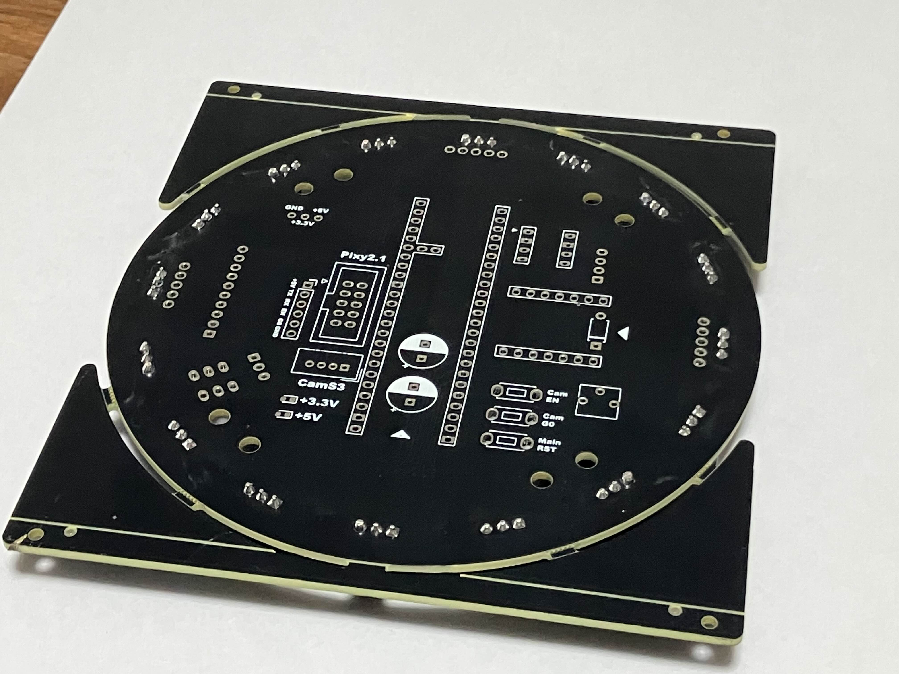
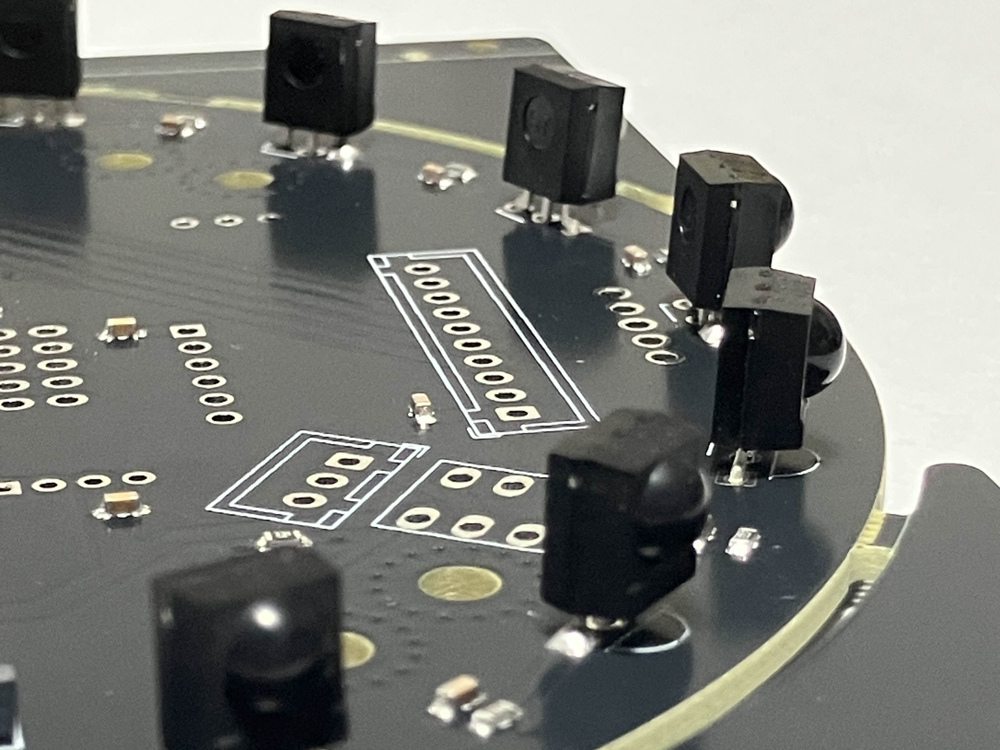
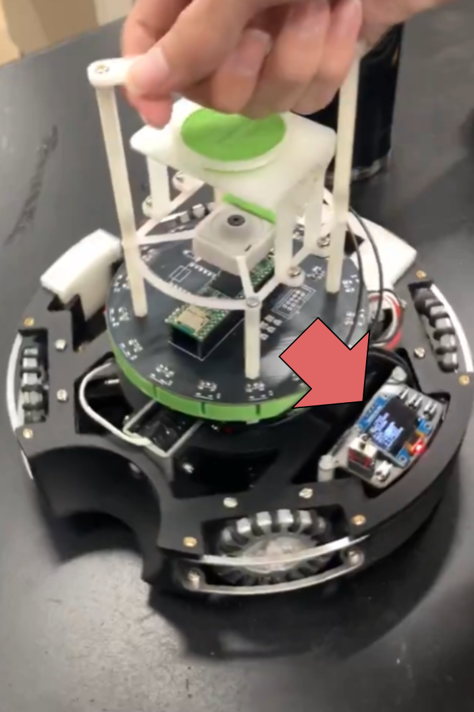
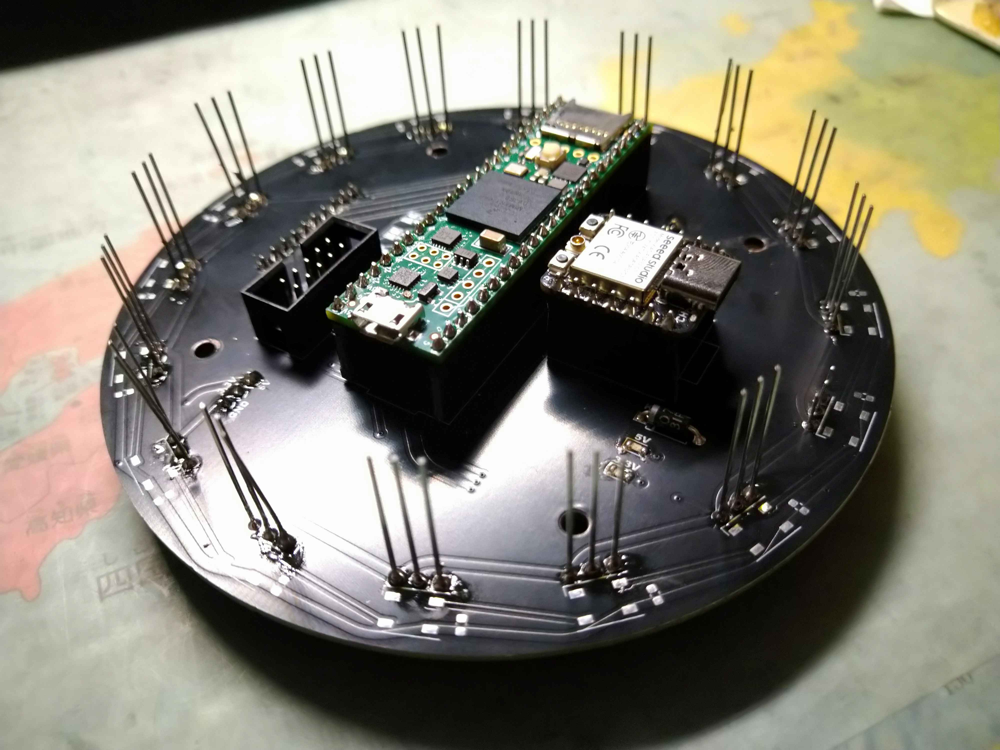
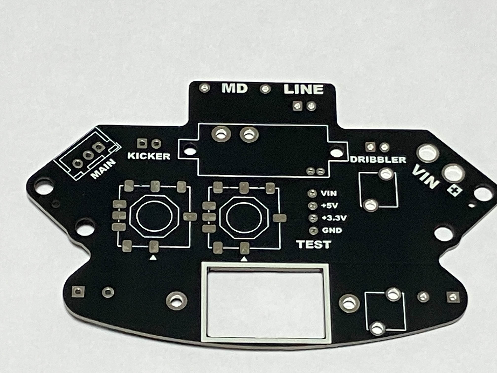
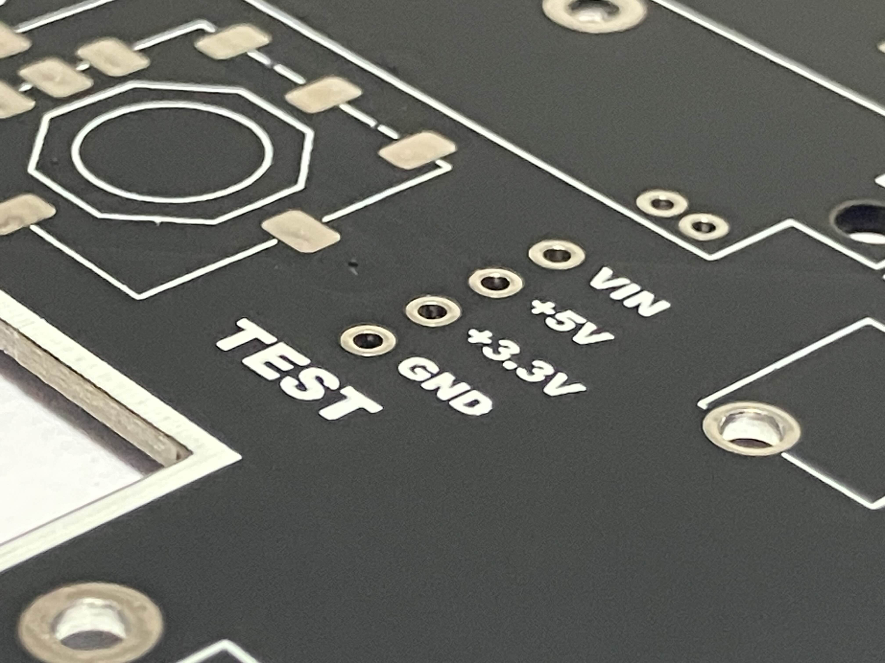

TOINIOT² Blog
メイン基板-2-
2024-11-24 Writer: 010
こんにちは。今回はJLCPCB様にメイン基板(改良ver.)を発注させてもらったお話。
すでに初代が手元にあるのに、この基板のレビューした記憶ないなーと思って過去の記事さかのぼってたらありました。
フレキシブル基板の紹介に気を取られてたった数行で終わらした悪しきブログが!!
スミマセン…
今日はちゃんと色々話していきますのでよろしければお付き合いください。
と、その前に毎回お世話になっているJLCPCB様の紹介を…!
JLCPCBは主に基板製作を手掛けている会社です。しかし、それだけではなく、3DプリントやCNC加工なども行っており、彼らに作れないものはない！と言っても過言ではありません。
そして、JLCPCB最大の特徴は「安い」「早い」「正確」の3拍子がそろっていること。
商品自体は1$から発注可能、工場は海外にあるのに、空輸とはいえ発注から2週間かからずでの到着はかなり魅力的です。
しかもこの2週間とはあくまでも通常配達での話。速達サービスを使えば数日で届きます。1週間もかかりません。ここでもう一度言っておきます。
出荷元は海外です！日本ではありません‼凄すぎ…
もちろん、確立された機械生産によって不良品に当たる可能性はほとんどなく、少なくても僕たちは一度も遭遇していません(僕たちの設計ミスはたくさんありましたが(笑))。
あとそうそう、オペレーターの方がメールで注文内容について応対してくれるのも推しポイント!!
以前僕たちが頼ませていただいた基板の中に構造上貧弱になっている箇所があったのですが、このままでは危ないこと、解決策などを提案していただき事なきを得ました。 しかも全部無料で…!(*'▽')
今ならクーポンもゲットできるみたいです。 この機会をお見逃しなく！！

↓JLCPCB様のHP
https://jlcpcb.jp/
↓クーポンゲットのチャンス！
・新規ユーザー$60クーポン
https://jlcpcb.com/JPV
・その他のクーポン
https://jlcpcb.jp/coupon-center?from=6layer
では本題へレッツゴー

 まずは上の写真をご覧ください。随分と形が違いますが、なんと両方とも「メイン基板」なんです。
左が昨年、右が今年のものなのですが、変化したところを順を追って説明していきます。
まずは上の写真をご覧ください。随分と形が違いますが、なんと両方とも「メイン基板」なんです。
左が昨年、右が今年のものなのですが、変化したところを順を追って説明していきます。
1. ボールセンサ基板との合体
これが一番のポイントだと思います。以前はメイン基板といえば主にマイコンを乗せるためのものであり、ボールセンサはその上部に別物の基板としてつけていました。
しかし今年はこの2つを1つに。メイン基板からボールセンサ基板へとつながる配線がすべて基板内に集約され、見栄えが良くなったのはもちろんのこと、何よりメンテナンス性が格段に向上しました。
ライトウェイトを始めたころは、写真のようにセンサひとつひとつに線がつながっていたのでつけるのも外すのも時間がかかって仕方がなかった…去年はフラットケーブルと呼ばれるそれらが1つにまとまったものを使用しましたが、「線」である以上取り外しは必要ですしね(あとこの手の線は長さ調節が難しめなのが地味にきつい)…あとはメイン基板の上に来るものがカメラとハンドルのみになるので、カメラの配線を通すためにボールセンサ基板の形を調整しなくて済むのもけっこうありがたい。
大体はセンサ配置に沿った形にして、中央をくり抜けばうまくいくのですが、コネクタをつける場所とかを考えているとあれ…意外とスペースない!!なんてこともあるあるなので。

2. UI基板の誕生

どした急に関係ない基板出てくるやん、とツッコまれそうですが関係大アリ…!
先ほどはメイン基板に追加されたものの話をしましたが、実はなくなったものもあるんです。
それが操作に使うボタンやディスプレイなど。そしてそれらがまとめて取り付けられたのがUI基板、というわけです。
ついさっき基板類はまとめたほうが配線諸々楽だよ～といったばかりなのにもう矛盾するのか!
と思われる方もいらっしゃるかもしれませんが、もちろんこれには理由があり、それは、ボタンなのに押しづらい、ディスプレイなのに見づらいといったことをなくすため。
メイン基板はCPUをつかさどるロボットの中心。基本機体の中心に配置されます。
しかし広いコート上だとちょっと手が届きにくい、というなんとも致命的な欠陥が発生します。
そうならないために、操作関連に特化した基板を機体後方よりに配置することで、試合の時も落ち着いて、確実にロボットをスタートさせることができるのです。
この変更が結果的に、ボール関連のセンサ類を載せるゆとりを作ったとも考えられるので一石二鳥♪
3. CPU

昨年はArduino Mega2560でしたが、今年はTeensy4.0になりました。
変更した理由としては、サイズが小さい、というのは大きかったかも。
上の写真を見てもらえるとわかるのですが、マイコンの形に沿うように線で縁取られています。
結構違いますよね。
あっ、ちなみにこのような基板に線や文字を入れることをシルクスクリーンと言って、JLCPCB様だとなんと無料で行ってくれるサービスになります。
どこに何をつなげばいいのかを明示するのはもちろん、こんな感じでチームのロゴを入れたりして基板をかっこよく仕上げることもできるのでぜひ一度やってみてください(追加料金なしっていいよね、ホント。)
こちらの記事でも詳しく紹介しているのでよければご覧ください!
ここまでメイン基板の仕様についていろいろお話してきましたが、見ての通り本当に複雑な基板です。
当然どこか1ヶ所でもミスがあれば、ロボットの機能の大半を失うことになります。
1つにまとめたら配線楽だよ〜なんてことが気軽に言えるのも製造過程で失敗が起きない前提。
このようなことは絶対に自作の基板では成し遂げられません。JLCPCB様の技術があって初めて成り立つものです。
本当に感謝しなければなりませんね。
さて、1ヶ月後にはRCJ和歌山ノード大会を迎えます。
私たちTOINIOT²最後のシーズン、いよいよスタート!寝屋川、名古屋で皆さんと会えるよう全力で戦います。
いくぞ、世界!!
今回はここまで。
最後まで読んでいただきありがとうございました。
ps.

メイン基板についていろいろと話していたら電源基板ver.4について書くの忘れてました(バカ)
まあ電源基板といえば毎回、ロボット一の大電流が流れる場所。絶対に失敗は許されないからこそJLCPCB様に発注しよう!と言っているのですが、今回は別の箇所に注目。

写真を見ていただくと、「TEST」の文字が…!実はこれ、試合では使わない、その名の通り、実験のためのスペースなんです。
ロボットを作っていく中で、センサの動作チェックやモーターの動き具合を確かめるため、実際に試してみることも多いと思います。
回路はブレッドボードを使えば比較的容易に基板を再現できますが、ここで問題となるのが電源。
使用する部品によって適正電圧は決まっており、それこそモーターの9.6Vなんかは乾電池を繋げてもなかなか生み出せません。しかしこのテスト用の電源スペースがあれば、簡単に必要な電気を供給することができます。
こんな+αが実現するのもJLCPCB様に頼ませていただいたからこそですね(自作でそんなことしている余裕ない)(*'▽')